기계정비산업기사 (2003-08-10 기출문제)
1과목: 공유압 및 자동화시스템
1. 도면의 기호에 대한 설명으로 맞는 것은?
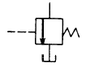
- 무부하 밸브이다.
- 외부 드레인형이다.
- 전자 작동형이다.
- 감압비는 1:3 이다.
(정답률: 67%)

2. 다음 그림의 속도제어 회로의 명칭은?
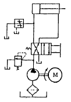
- 재생 회로
- 블리드-오프 회로
- 미터-인 회로
- 미터-아웃 회로
(정답률: 72%)
3. 공기 탱크의 역할과 거리가 먼 것은?
- 공기압력의 맥동을 평준화한다.
- 응축수를 분리시킨다.
- 급격한 압력강하를 시킨다.
- 압축공기를 저장한다.
(정답률: 75%)
4. 기호의 표시 방법과 해석의 기본 사항이 아닌 것은?
- 기호는 기능· 조작 방법 및 외부 접속구를 표시한다.
- 기호는 기기의 실제 구조를 나타내는 것이다.
- 기호는 원칙적으로 통상의 운휴상태 또는 기능적 중립 상태를 나타낸다.
- 회로도에서는 반드시 중립상태를 나타내지 않아도 무방하다.
(정답률: 35%)
5. 금속관의 특징 중 옳지 않은 것은?
- 강관 : 펌프의 흡입관, 토출배관, 탱크의 귀환등 고압용에 사용
- 동관 : 열전도율이 크고, 내식성이 우수하므로 화학적 분위기가 나쁜 곳에 사용
- 알루미늄관 : 구리관에 비해 무게가 1/3 정도로 가벼워 항공기 배관에 사용
- 스테인리스강 : 난연성 작동오일을 사용하며 부식을 일으키기 쉬운 곳에 사용
(정답률: 68%)
6. 공유압 조합기기의 특징 중 옳은 것은?
- 정밀 속도 제어가 가능하다.
- 단계적인 속도제어가 불가능하다.
- 정확한 위치제어가 어렵다.
- 충격이 발생한다.
(정답률: 62%)
7. 유압펌프인 가변 용량 베인 펌프의 토출량을 변화시키는 방법 중 가장 바람직한 것은?
- 로터의 회전 중심을 움직이든가 캠링을 움직여 한다.
- 로터의 회전 중심만 움직이고 캠링은 고정한다.
- 로터의 중심과 캠링을 고정하고 작동시키면 된다.
- 로터의 회전 중심을 고정하고 캠링을 움직여야 한다.
(정답률: 28%)
8. 하역 운반 기계 회로 중 회로압이 설정압을 초과하면 유체압에 의해 파열되어 압유를 탱크로 귀환시키고 동시에 압력상승을 막아 기기를 보호하는 역할을 하는 유압기기는 무엇인가?
- 압력 스위치(pressure switch)
- 유체 퓨즈(fluid fuse)
- 체크 밸브(check valve)
- 릴리프 밸브(relief valve)
(정답률: 63%)
9. 공기압 조정 유닛에서 공급되는 공기압이 6bar이고 실린더의 단면적이 10㎝2라고 하면 작용할 수 있는 하중은 몇 kgf까지인가?
- 6kgf
- 60kgf
- 600kgf
- 6000kgf
(정답률: 63%)
10. 다음 공압 기호의 명칭은?
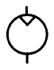
- 유압 모터
- 공압 펌프
- 유압 펌프
- 공압 모터
(정답률: 36%)
11. 유압 프레스를 설계하려고 한다. 사용압력은 240kgf/cm2 필요한 힘은 500kN 이며 행정거리는 0.8m이다. 또한 실린더의 속도는 0.01m/sec라고 가정할 경우 실린더의 직경(mm) 및 펌프토출 유량(ℓ /min)은?
- 113mm, 11ℓ /min
- 123mm, 12ℓ /min
- 153mm, 11ℓ /min
- 163mm, 12ℓ /min
(정답률: 31%)
12. I.E.C(국제전기표준회의)에서 권고하고 있는 전기 릴레이 회로의 작성에 대한 설명으로 맞는 것은?
- 종속선(렁)은 위에서 아래로 신호흐름을 갖는다.
- 전원의 모선을 좌측과 우측에 그린다.
- 전원 부분을 실제의 위치에 그려준다.
- 제어의 순서에 따라 위에서 아래로 그린다.
(정답률: 27%)
13. 핸들링 중 직선적으로 부품이 이송되며 작업이 수행되어 지는 핸들링은?
- 리니어 인덱싱 핸들링
- 수직 로터리 인덱싱 핸들링
- 수평 로터리 인덱싱 핸들링
- 라쳇구동 핸들링
(정답률: 61%)
14. 검출속도가 빠르고 수명이 길며 전자장내의 와전류 형성에 의해 금속 물체를 검출하는 것은?
- 리밋 스위치
- 마이크로 스위치
- 유도형 근접 스위치
- 광전 스위치
(정답률: 52%)
15. 엑추에이터를 설계하거나 선정할 때는 충분한 검토를 거쳐야 한다. 다음 중 잘못된 사항은?
- 회전운동으로 일어나는 관성의 상호 역학적 관계를 잘 파악한다.
- 기계 전체의 역학적인 밸런스를 감안해야 한다.
- 경험에 의한 운동 조건을 추정하여 결정한다.
- 설계식을 면밀히 검토해서 합리적인 수치를 구한다.
(정답률: 78%)
16. PLC의 기능과 성능을 결정하는 가장 중요한 프로그램인『시스템 프로그램』은 PLC의 어느 메모리에 저장되는가?
- 프로그램 메모리
- ROM
- RAM
- 캐시 메모리
(정답률: 24%)
17. 공압시스템의 오동작 및 고장에 대한 설명 중 틀린 것은?
- 공압부품과 배관의 자연마모 및 손상으로 고장이 발생한다.
- 부품의 마모는 기능장애, 공압의 누설, 부품의 파손을 야기할 수 있다.
- 배관은 내, 외부 환경요인에 의해서 막히거나 구부러 질수 있다
- 오염된 공기는 부품에 별 영향이 없다.
(정답률: 82%)
18. 고정 결선 (Hard-wired)방법으로 시스템을 구성할 때 적당한 순서는?
- 소프트웨어 설계 → 하드웨어 구성 → 사용기술의 선택 → 시운전
- 하드웨어 구성 → 소프트웨어 설계 → 사용기술의 선택 → 시운전
- 사용기술의 선택 → 소프트웨어 설계 → 하드웨어 구성 → 시운전
- 사용기술의 선택 → 하드웨어 구성 → 소프트웨어 설계 → 시운전
(정답률: 54%)
19. 유압 선형 액추에이터 설명으로 틀린 것은?
- 비압축성 유체를 사용한다.
- 정밀한 속도제어가 가능하다.
- 온도변화에 따라 유체의 점도 변화가 심하다.
- 빠른 속도가 필요한 곳에 유용하다.
(정답률: 53%)
20. 다음중 화학센서에 속하는 것은?
- 광 센서
- 온도 센서
- 가스 센서
- 자기 센서
(정답률: 83%)
2과목: 설비진단관리 및 기계정비
21. 주택 및 산업체의 소음의 크기를 측정하는 지시 소음계 (SOUND LEVEL METER)의 측정 범위는?
- 0∼40 [dB]
- 40∼140 [dB]
- 140∼240 [dB]
- 240∼340 [dB]
(정답률: 63%)
22. 분할핀의 사용방법 중 적합하지 않은 것은?
- 볼트 또는 기계부품의 위치결정용으로 사용한다.
- 볼트, 너트의 풀림방지용으로 사용한다.
- 분할핀 부착시 평와셔와 같이 사용한다.
- 부착후 양끝은 충분히 넓혀 둔다.
(정답률: 44%)
23. 축이 휘었을 경우 짐크로우(Jim crow)로 수정을 가할 수 있다. 이 짐 크로우에 의한 일반적인 축의 수정한계는 얼마인가?
- 0.01-0.02mm
- 0.1-0.2mm
- 0.⑤-0.1mm
- 0.5-1mm
(정답률: 58%)
24. 설비보전표준의 분류 중 일상보전과 관계 있는 것으로서 공작기계가 없어도 할 수 있는 보전작업은?
- 검사
- 정비
- 수리
- 설치
(정답률: 29%)
25. 접촉면 사이에 마찰제가 충분한 유막을 형성하고 마멸이나 발열이 미소하여 베어링으로서 가장 양호한 마찰 상태는?
- 고체 마찰
- 유체 마찰
- 경계 마찰
- 복합 마찰
(정답률: 70%)
26. 가로 x 세로가 1m, 두께가 200mm인 철판의 가운데에 직경 500mm의 구멍이 가공되어 있다. 비중을 7.8로 하였을 때의 철판의 무게를 구하시오. (단, 소수 둘째자리에서 반올림 하시오)
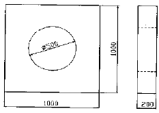
- 28.5kg
- 780.6kg
- 1531.2kg
- 1560.7kg
(정답률: 31%)
27. 정비용 측정기구 중 볼 베어링의 윤활상태를 측정하는 기구는?
- 베어링 체커
- 베어링 진동계
- 회전계
- 표면 온도계
(정답률: 73%)
28. 키이를 조립하였을 경우 축과 보스가 가볍게 이동할 수 있는 키는?
- 묻힘 키이
- 접선 키이
- 반달 키이
- 슬라이딩 키이
(정답률: 60%)
29. 공장의 보전요원을 각 제조부문의 감독자 밑에 배치하여 보전을 행하는 보전방식은?
- 집중보전
- 지역보전
- 부분보전
- 절충보전
(정답률: 45%)
30. 다음 중 집중보전의 장점이 아닌 것은?
- 대수리시 인원 동원이 용이하다.
- 보전요원을 적절히 관리 감독할 수 있다.
- 긴급작업이나 새로운 작업을 신속히 처리할 수 있다.
- 보전원의 기능향상을 위한 훈련이 잘 행해진다.
(정답률: 44%)
31. 실로코 통풍기의 베인 방향으로 옳은 것은?
- 전향베인
- 경향베인
- 후향베인
- 수직베인
(정답률: 67%)
32. 급유 간격이 길고 누설이 적으며 밀봉성과 먼지 침입이 적은 장점을 가진 급유 방법은?
- 버킷 급유
- 유욕 급유
- 중력 순환 급유
- 그리스 패킹
(정답률: 48%)
33. 진동의 크기를 알아내는데 필요한 진폭표시의 파라미터에 속하지 않는 것은?
- 변위
- 속도
- 가속도
- 위상
(정답률: 53%)
34. 베어링을 축의 양쪽에 부착할 때 적당하지 않는 방법은 어느 것인가?
- 양쪽베어링을 이동하지 않도록 부착한다.
- 양쪽베어링을 모두 이동 가능하도록 부착한다.
- 한쪽은 고정하고 한쪽은 이동하도록 부착한다.
- 한쪽은 고정하고 한쪽은 자유롭게 부착한다.
(정답률: 37%)
35. 설비열화를 방지하기위한 조치로서 부적절한 것은?
- 전원스위치를 정기적으로 교체한다.
- 패킹, 시일 등을 정기적으로 점검한다.
- 가동전에 베어링, 기어 등 회전부에 윤활유를 공급한다.
- 오일필터를 규정된 시간마다 정기적으로 교환한다.
(정답률: 72%)
36. 설비의 배치시 기종마다 설비를 모아서 배열하는 형의 배치 방법은?
- 기능형 배치
- 제품형 배치
- 제품 고정형 배치
- 혼합형 배치
(정답률: 47%)
37. 어느 공장의 월 가동수가 20일인 장비가 설비고장과 작업 고장에 의한 설비 휴지시간이 1개월에 10시간이 걸리면 실제 가동율은 몇 ％인가? (단, 1일 가동시간은 8시간 이다.)
- 93.75
- 96.25
- 95.3
- 91.8
(정답률: 43%)
38. 윤활유를 사용하는 목적이 아닌 것은?
- 감마작용
- 완충작용
- 냉각작용
- 방청작용
(정답률: 60%)
39. 팽창식 체임버의 소음흡수 능력을 결정하는 기본 요소는?
- 진동비
- 체적비
- 면적비
- 소음비
(정답률: 43%)
40. 베어링의 결함 유무를 측정하고자 할 때 사용되는 진동 측정용 센서는?
- 변위계
- 속도계
- 가속도계
- 레벨계
(정답률: 45%)
3과목: 공업계측 및 전기전자제어
41. PLC(Programmable Logic Controller)가 갖추어야 할 조건이 아닌 것은?
- 점검 및 보수가 용이할 것
- 제어반 설치 면적이 클 것
- 프로그램 작성 변경이 용이할 것
- 안정성 및 신뢰성이 높을 것
(정답률: 78%)
42. 배선용 차단기에 대한 설명 중 틀린 것은?
- 수동으로 on, off 조작을 한다.
- 차단기에 연결된 선로에 과전류가 흐르면 차단한다.
- 동작하면 핸들이 on, off 중간위치에서 정지한다.
- 기동전류나 일시적인 과전류에서 동작한다.
(정답률: 37%)
43. 다음 중 위상제어 회로에 사용되지 않는 것은?
- SCR
- UJT
- PUT
- CDS
(정답률: 30%)
44. 정류기의 평활회로로 사용되는 여파기의 종류는 어느 것 인가?
- 저역 여파기
- 고역 여파기
- 대역 여파기
- 대역소거 여파기
(정답률: 33%)
45. 다음 수식에서 드 모르강의 법칙이 맞는 것은？
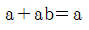
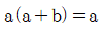
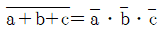
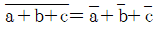
(정답률: 57%)
46. 다음 쿨롱의 법칙을 설명한 것 중 틀린 것은?
- 두 자극 사이에 작용하는 힘의 크기는 두 전하 사이의 거리의 제곱에 비례한다.
- 서로 다른 부호인 경우 두 자극은 끌어 당긴다.
- 두 자극 사이에 작용하는 힘의 크기는 두 자극의 세기의 곱에 비례한다.
- 그 힘의 방향은 두 자극을 이은 직선 위에 있다.
(정답률: 48%)
47. JK-FF에서 J=1, K=1 이면 동작상태는 어떻게 되는가?
- 변하지 않는다.
- set 상태
- 반전된다.
- reset 상태
(정답률: 56%)
48. 다음 중 국제 단위계(SI)에서 기본 단위계에 속하지 않는 것은?
- 광도
- 온도
- 속도
- 전류
(정답률: 40%)
49. 제어기기에는 검출기, 변환기, 증폭기, 조작기기 등으로 구성되어 진다. 이 때 서보모터는 어디에 해당되는가?
- 조작기기
- 증폭기
- 변환기
- 검출기
(정답률: 56%)
50. 피크노미터를 이용하여 밀도 측정시 20[oC]에서 수은의체적이 25[㎝3],질량이 1[㎏] 일 때의 밀도는 몇[g/㎝3] 인가?
- 30
- 40
- 50
- 60
(정답률: 49%)
51. 다음 중 PLC의 입력부에 연결되어질 기기가 아닌 것은?
- 인코더
- 근접스위치
- 솔레노이드밸브
- 디지털계측기
(정답률: 55%)
52. 발전기의 유도기전력의 방향을 알기 위한 법칙은?
- 패러데이의 법칙
- 렌츠의 법칙
- 플레밍의 왼손법칙
- 플레밍의 오른손법칙
(정답률: 39%)
53. 제어대상에 속하는 것으로 측정되어 제어될 수 있는 것을 무엇이라 하는가?
- 목표값
- 제어대상
- 제어량
- 조작량
(정답률: 42%)
54. 연산 증폭기의 출력 오프셋 전압측정 조건은?
- 2개의 입력단자를 개방한다.
- 2개의 입력단자를 단락한다.
- 2개의 입력단자를 그라운드에 접속한다.
- 2개의 입력단자를 반전시킨다.
(정답률: 32%)
55. 동일 거리를 나가는데 요하는 초음파 펄스의 흐름과 같은 방향과 반대 방향의 시간차에 의해 평균 유속을 구하는 싱어라운드(sing around)법을 측정 원리로 하는 유량계는?
- 초음파식 유량계
- 터빈식 유량계
- 와류식 유량계
- 용적식 유량계
(정답률: 69%)
56. 플립플롭회로는 다음 중 어느 회로에 해당하는가?
- 쌍안정 멀티 바이브레이터
- 비안정 멀티 바이브레이터
- 단안정 멀티 바이브레이터
- 블로킹 발진회로
(정답률: 50%)
57. 평균 반지름이 10[㎝]이고 감은 회수가 20회인 원형코일에 2[A]의 전류를 흐르게 하면 이 코일중심의 자장의 세기는 몇 [AT/m]인가?
- 100
- 200
- 300
- 400
(정답률: 40%)
58. 다음 중 적분회로에 속하는 것은?
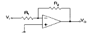
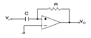
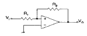
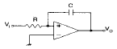
(정답률: 41%)
59. 150[V]용 직류 전압계가 있다. 이 전압계의 내부저항은 18,000[Ω ]이다. 이 전압계를 직류 600[V] 용으로 사용하려면 몇 [Ω ]의 저항이 필요한가?
- 50 [㏀]
- 52 [㏀]
- 54 [㏀]
- 56 [㏀]
(정답률: 37%)
60. 투광기에서 나오는 광선을 수광기로 받고 검출 물체가 차폐하면 신호를 보내는 검출 스위치는？
- PS
- FS
- PHS
- LS
(정답률: 37%)
4과목: 기계정비 일반
61. 격자 상수란?
- 단위체적당의 격자수
- 격자를 이루고 있는 원자의 수
- 단위세포 한 모서리의 길이
- 단위세포 모서리와 모서리의 길이
(정답률: 25%)
62. 피치가 12.7㎜, 잇수 15인 체인휘일이 400rpm으로 회전할 때 이 체인의 평균 속도는 약 얼마인가?
- 1.3m/sec
- 2.5m/sec
- 3.3m/sec
- 4.5m/sec
(정답률: 25%)
63. 베어링 하중 3500㎏f를 지지하고 있는 강제(鋼製)엔드저널의 허용 베어링 압력이 100㎏f/㎝2<이라면 저널의 지름 d와 길이 ℓ은 각각 얼마 정도인가? (단, ℓ = 2d이다.)
- d = 41.8㎜, ℓ = 83.6㎜
- d = 46.1㎜, ℓ = 92.2㎜
- d = 51.2㎜, ℓ = 102.4㎜
- d = 56.3㎜, ℓ = 112.6㎜
(정답률: 22%)
64. 두줄나사를 두바퀴 돌렸더니 축 방향으로 12㎜ 이동했다. 이 나사의 피치(pitch)와 리드(lead)는 각각 얼마인가?
- p = 3㎜, ℓ = 6㎜
- p = 6㎜, ℓ = 3㎜
- p = 3㎜, ℓ = 3㎜
- p = 6㎜, ℓ = 6㎜
(정답률: 44%)
65. 원동차의 지름이 300 mm, 종동차의 지름이 500 mm인 내접촉 마찰차의 중심거리는?
- 800 mm
- 400 mm
- 200 mm
- 100 mm
(정답률: 24%)
66. 특수강에서 합금원소의 주요한 역할이 아닌 것은?
- 기계적, 물리적, 화학적 성질의 개선
- 황 등의 해로운 원소 제거
- 소성가공성의 개량
- 페라이트의 입자 조정
(정답률: 36%)
67. 다음 중 역류를 방지하여 유체를 한쪽 방향으로 흘러가게 하는 밸브는?
- 게이트 밸브
- 체크 밸브
- 글로브 밸브
- 볼 밸브
(정답률: 66%)
68. 헬리컬 기어의 축직각 모듈 mn과 치직각 모듈 m과의 관계는 다음 중 어느 것인가? (단, β 는 나선각이다.)
- m = mn cos2β
- mn = m cosβ
- m = mn cosβ
- mn = m cos2β
(정답률: 30%)
69. 다음중 구상흑연 주철의 조직에 포함되지 않는 것은?
- 마텐자이트
- 페라이트
- 펄라이트
- 시멘타이트
(정답률: 40%)
70. 고체 침탄법에서 침탄제로 많이 사용되는 것은?
- 목탄 60%와 BaCO3 40%의 혼합물
- 목탄 또는 KCN 60%의 혼합물
- BaCl2 60%와 CaCO3 40%의 혼합물
- NaCN 40%와 KCN 60%의 혼합물
(정답률: 27%)
71. 다음 합금 중 고체 음이나 고체진동이 문제가 되는 경우 음원이나 진동 원을 사용하여 공진, 진폭, 진동속도를 감쇠 시키는 합금은?
- 초 소성합금
- 초 탄성합금
- 제진 합금
- 초 내열합금
(정답률: 36%)
72. 금속 재료가 일정한 온도 영역과 변형속도의 영역에서 유리질처럼 늘어나는 특수한 현상은?
- 형상기억
- 초소성
- 초탄성
- 초취성
(정답률: 36%)
73. 캠 브레이크(cam brake)는 다음 중 어느 브레이크에 속하는가?
- 유체 브레이크
- 축압 브레이크
- 자동하중 브레이크
- 밴드 브레이크
(정답률: 35%)
74. 탄소 6.68%C를 함유한 백색 침상의 금속간 화합물로서 800∼920HB로 취약하며 상온에서는 강자성이나 210℃가 넘으면 상자성으로 변하여 A0 변태를 하는 것은?
- 시멘타이트
- 흑연
- 오스테나이트
- 페라이트
(정답률: 36%)
75. 다음 중 가장 큰 회전력을 전달시킬 수 있는 키는?
- 평 키(flat key)
- 안장 키(saddle key)
- 핀 키(pin key)
- 접선 키(tangential key)
(정답률: 40%)
76. 다음 탄소 공구강 중 탄소 함유량이 가장 많은 것은?
- STC1
- STC2
- STC3
- STC4
(정답률: 34%)
77. 쾌삭강은 탄소강에 어떤 원소를 첨가시켜 개선한 구조용강이다. 다음 중 쾌삭강에 첨가하는 원소가 아닌 것은?
- Si
- S
- P
- Pb
(정답률: 32%)
78. 재료의 침탄층, 질화층, 탈탄층 등의 경도를 측정하는데 가장 적당한 시험법은?
- 비커스 경도시험
- 마르텐스 경도시험
- 브리넬 경도시험
- 쇼어 경도시험
(정답률: 25%)
79. 500 kgf 의 하중을 올리는 나사 잭의 허용인장응력을5kgf/mm2라고 할 때 나사의 직경으로 가장 알맞은 것은?
- 12mm
- 14mm
- 18mm
- 22mm
(정답률: 21%)
80. 연강축의 허용 전단응력 τ a = 200㎏f/㎝2일 때 비틀림 모멘트만을 받는 축의 지름 d는 약 몇 ㎝인가? (단, H : 전달마력(PS), N : 회전수(rpm)이다.)
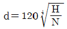
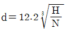
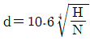
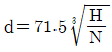
(정답률: 33%)